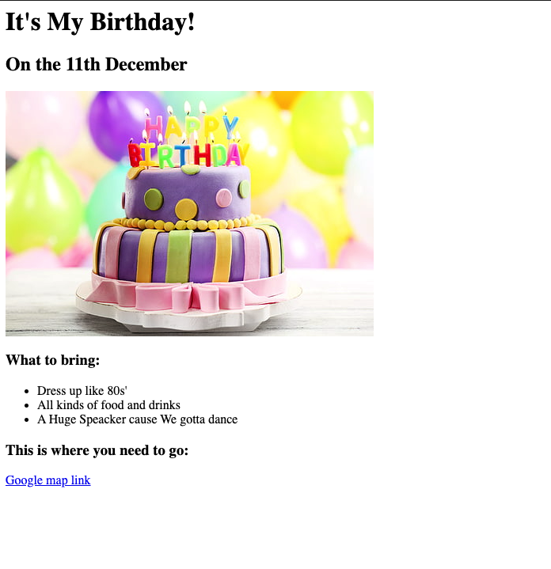
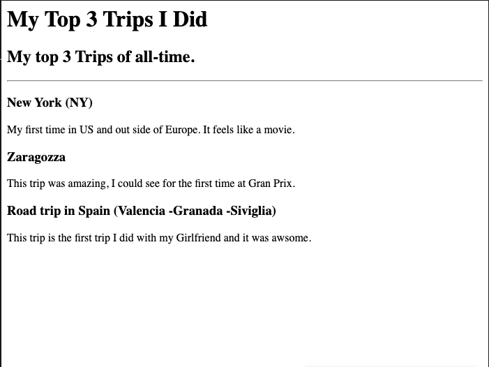

>

<!-- TODO 6: Add images to show the project previews
HINT for TODO 6: You can use the height attribute set to 200 to make the image smaller:
https://developer.mozilla.org/en-US/docs/Web/HTML/Element/img#attr-height -->

<!-- TODO 7: Add the Contact Me and About Me page links -->
 <!DOCTYPE html>
 <html lang="en">
 <head>
    <meta charset="UTF-8">
    <title>S. Savarese's Projects</title>
 </head>
 <body>
    <h1>Salvatore Savarese Portfolio</h1>
    <h2>I am a Web Developer/IT Support</h2>
 </hr>
<h2><a href="./public/Birthday.html">Birthday Invite Project</a></h2>


<h2><a href="./public/My FavTrips.html">My Favorite Trips Project</a></h2>

</hr>
<h3><a href="./public/about.html">About Me</a>   <a href="./public/contact.html">Contact Me</a></h3>

 </body>
 </html>